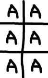

Los otros días pensé en hacerle a mi hijo de tres años y medio unas tarjetas de papel con las letras y números para jugar juntos y ayudarlo con el armado de palabras.
En retrospectiva, mejor haber buscado antes en internet y haber encontrado por ejemplo Alphabets & Words de Mr Printables.
Objetivo: 
Software evaluado
El objetivo es realizar la tarea de la forma más sencilla posible.
Ya que son 27 letras (alfabeto español) y 10 números, totalizando 37 hojas con seis carácteres cada una, la idea es hacerlo mediante scripts.
Sobre el tipo de archivo a generar, ya que el contenido es solo una fuente, y eventualmente un reborde, se prefiere utilizar un formato vectorial sobre un formato de mapa de bits. Vale la pena mencionar que el estandar para archivos de formato vectorial es svg.
Los programas evaluados (algunos conocidos, otro encontrados buscando en internet) fueron:
-
gimp: mapas de bits, para generar la imagen se debe crear y registrar un script (script-fu) o plug-in (generalmente python-fu). Luego debe llamarse desde la linea de comandos en batch
Se descartó gimp por sentirlo en primera instancia complicado y por trabajar con mapas de bits.
-
inkscape: gráficos vectoriales, tiene un scripting muy pobre en la forma de (x)verbs por linea de comandos que no permiten seleccionar opciones de las herramientas y necesitan de la interfaz gráfica para ejecutarse.
Inicialmente se descartó, pero a raíz de la pregunta en stackoverflow relativa al uso de inkscape para procesar svg's se terminó utilizando para centrar los carácteres en cada tarjeta.
-
svgwrite: librería python para generar archivos de tipo svg, se utilizó para generar las hojas. El problema radica en que el formato svg no permite centrar un carácter en un rectángulo, debiendose calcular manualmente.
Al principio descartada, esta librería fué la que finalmente se utilizó luego de encontrar la forma de ajustar los carácteres utilizando inkscape.
-
imagemagick: programa que puede utilizarse para generar imagenes de mapas de bits y puede llamarse desde el shell.
Se leyó de forma rápida durante una media hora como generar la letra centrada y no se encontró, por lo que se decidió descartarlo.
-
pillow: librería para python para generar imágenes de mapa de bits.
Similar a imagemagick, se descartó luego de otra media hora de lectura de la documentación y no encontrar como centrar texto de forma sencilla. Vale la pena mencionar que no se pueden generar imágenes en escalas de grises.
Generación de hojas
La creación de las hojas se dividió en las siguientes etapas:
-
Generar una hoja base utilizando svgwrite.
Ya que el formato devuelto es svg, que es xml, se crea la imagen con el texto PLACEHOLDER para luego reemplazarlo.
-
Se generan las hojas deseadas reemplazando el texto PLACEHOLDER con el carácter deseado utilizando
sed. Como se mencionó anteriormente esto es posible debido a que el formato svg es xml, el cual es texto legible. -
Se centran los carácteres de cada hoja obtenidas en el paso anterior utilizando las funcionalidades de scripting de inkscape.
-
Se convierten los archivos a pdf y se concatenan.
Las etapas siguientes se realizan mediante dos scripts:
-
create-base.py: script en python el cual genera un svg base que consta de seis rectángulos que dividen una hoja A4 y seis carácteres iguales que se solaparán con los rectángulos anteriores.Se agregarán identificadores a cada elemento, para despues poder realizar el centrado de elementos utilizando inkscape.
Sobre las fuentes a utilizar, se pueden descargar de internet y guardar en el directorio
$HOME/.local/share/fontso$HOME/.fonts(ruta deprecada), como se indica en la documentación de las distintas distribuciones: debian, fedora o arch por ejemplo.Para utilizar la librería svgwrite sin necesidad de instalarla a nivel de sistema se utiliza virtualenv:
$ python3 -m venv ENV $ source ENV/bin/activate $ pip install svgwrite $ ./create-base.pyEn este link se puede descargar el script
create-base.py. cuyo contenido es el siguiente:#!/usr/bin/env python3 # # https://svgwrite.readthedocs.io/en/master/classes/shapes.html#basic-shapes-examples # import svgwrite # A4 WIDTH = 210.0 HEIGHT = 297.0 SIZE_X = WIDTH / 2.0 SIZE_Y = HEIGHT / 3.0 positions = ( (0, 0), (SIZE_X, 0), (0, SIZE_Y), (SIZE_X, SIZE_Y), (0, 2*SIZE_Y), (SIZE_X, 2*SIZE_Y), ) dwg = svgwrite.Drawing('base.svg', size=(WIDTH, HEIGHT), profile='tiny') i = 1 for x, y in positions: dwg.add( dwg.rect( insert=(x, y), size=(SIZE_X, SIZE_Y), id='r%d' % i, fill='white', stroke='black', stroke_width=1 ) ) dwg.add( dwg.text( 'PLACEHOLDER', insert=(x, y + SIZE_Y), id='t%d' % i, fill='black', font_size='25mm', font_family='Arialic Hollow', text_align='center' ) ) i += 1 dwg.save()Como puede verse es un script muy simple con la mayoría de los parámetros hardcodeados (lo cual no está muy bueno).
Nota: la fuente Arialic Hollow se descargó del sitio https://www.1001freefonts.com/es/arialic-hollow.font
-
align-and-compaginate.sh: shell script que genera una página por carácter en base al archivo generado en el paso anterior, lo alinea, convierte a pdf y luego compagina todas las hojas en un solo archivooutput.pdf.Lo más relevante es, como ya se mencionó, el uso de
sedpara generar el carácter y el uso de inkscape para la alineación de elementos.En este link se puede descargar el script
align-and-compaginate.sh. cuyo contenido es el siguiente:#!/bin/bash set -e # generate inkscape command cmd="" for i in {1..6}; do cmd=" $cmd --select=r$i --select=t$i" cmd=" $cmd --verb=AlignVerticalCenter" cmd=" $cmd --verb=AlignHorizontalCenter" cmd=" $cmd --verb=EditDeselect" done cmd=" $cmd --verb=FileSave" cmd=" $cmd --verb=FileQuit" # generate al pages (pdf) for character in {A..Z} Ñ {0..9}; do cat base.svg | sed -e 's#>PLACEHOLDER</text>#>'$character'</text>#g' > page-$character.svg inkscape -f page-$character.svg $cmd rsvg-convert -f pdf -o page-$character.pdf page-$character.svg done # concatenate pdfunite page-*.pdf output.pdfNota: se necesita tener instalado el paquete librsvg2-bin y poppler-utils en debian (ni que hablar de inkscape):
$ sudo apt-get install -qVy librsvg2-bin poppler-utils inkscape
El resultado de ejemplo puede descargarse de este link.
Extras
Alternativas
En Story behind our goodies by Philippe Teuwen (Past the SALT 2018) se puede encontrar una alternativa al método planteado en este post. Las diferencias que aprecié:
- En las diapositivas se muestra que tienen una hoja (plantilla con placeholders) hecha y a partir de esta reemplazan los textos; yo por otro lado intenté hacer la plantilla mediante código, lo que me consumió mucho tiempo y no tan pragmático como la solución de Philippe.
- Yo intento compaginar un pdf y Philippe simplemente crea archivos svg. Otra vez mi enfoque es más complicado, ya que si se manda a imprimir varios archivos al final es lo mismo que compaginar un pdf: pierdo tiempo y no agrega un valor apreciable.
Sobre el uso
Aprovecho para comentar que las letras fueron un éxito en casa. Lo que no recomiendo es imprimir más de un juego de letras, ya que yo imprimí cuatro para formar palabras sencillas pero resultó muy incomodo estar buscando las letras, además de ser difíciles de manipular debido a que las hojas son muy finas.